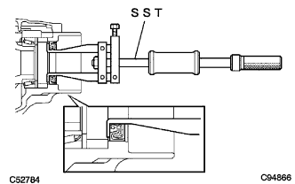

トランスファ ケース オイルシール RH（4WD） 取り外し |
参照| 1. バッテリーマイナスターミナル切り離し |
参照| 2. エンジンアンダ カバー RH取りはずし |
ボルト2本およびスクリュ2本をはずす。
ナットをはずし、エンジンアンダカバーRHを取りはずす。
| 3. オートマチックトランスアクスルフルード抜き取り |
ソケットヘキサゴンレンチ10を使用して、ドレーンプラグおよびガスケットをはずしフルードを抜き取る。
新品のガスケットを介して、ドレーンプラグを締め付ける。
| 4. トランスファオイル抜き取り |
| 5. フロントタイヤ取りはずし |
| 6. フロントアクスル シャフト ナット RH取りはずし |
| 7. フロントディスクブレーキキャリパASSY RH取りはずし |
| 8. スピード センサ FR RH切り離し |
| 9. タイロッドエンドRH切り離し |
| 10. フロントアクスルASSY RH切り離し |
| 11. フロントドライブ シャフトASSY RH取りはずし |
 |
角軸マイナスドライバーでベアリングブラケットホールスナップリングを押し縮め、ベアリングブラケットから取りはずす。
ドライブシャフトベアリングブラケットボルトNo.1をはずす。
 |
ドライブシャフトベアリングブラケットからフロントドライブシャフトASSY RHを取りはずす。
| 12. トランスファ ケース オイルシール RH取りはずし |
|  |
SSTを使用して、オイルシールをケースから取りはずす。